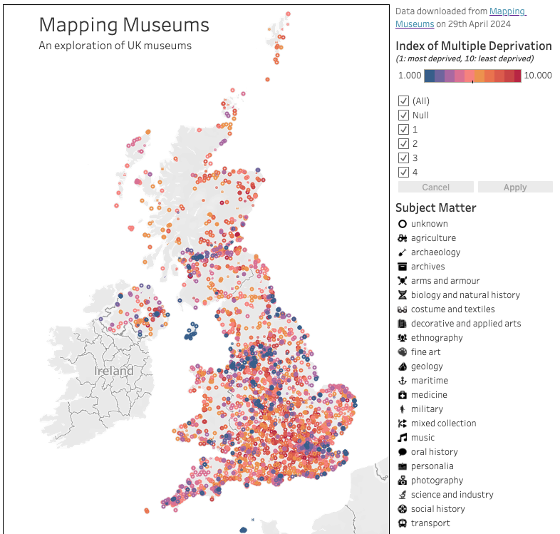

Recent projects

Mapping Museums
For this project I wanted to visualise a dataset from mappingmuseums.org and explore the distribution of culture across the UK
Project 2
For this project
Project 3
This project...
Contact
Please reach out to me via email: rosannaclairebarnard (at) gmail (dot) com